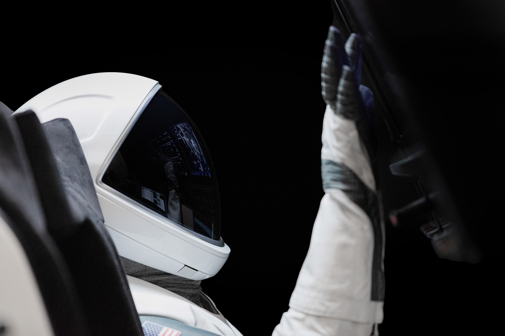

<!DOCTYPE html>
<html lang="en">
<head>
  <meta charset="UTF-8">
  <meta http-equiv="X-UA-Compatible" content="IE=edge">
  <meta name="viewport" content="width=device-width, initial-scale=1.0">
  <title>my.yuhangyuan</title>
  <link rel="stylesheet" href="../static/my.css">
</head>
<body>
  
</body>
</html>


<div class="Home-tabber">
  <div class="Home-tabber-img">
    
  </div>
  <div class="Home-tabber-nav">
    <div class="Home-tabber-nav-title"><h1>OUR MISSIONS</h1></div>
      <p class="Home-tabber-nav-p">
        All Dragon and Starship missions have the ability to conduct scientific research to improve life back on Earth as well as raise awareness to a global audience.
      </p>
        <div class="Home-tabber-nav-select">
          <a>EARTH ORBIT</a>
          <a style="margin-left: 20px;">SPACE STATION</span>
          <a style="margin-left: 20px;">MOON</a>
          <a style="margin-left: 20px;">MARS</a>
        </div>
        <div class="Home-tabber-nav-kuang">
          <div class="Home-tabber-nav-item">
            <span>ORBIT FREQUENCY</span>
            <span>ORBIT FREQUENCY	Every 90 minutes</span>
          </div>
          <div class="Home-tabber-nav-item">
            <span>MISSION DURATION</span>
            <span>3 - 6 days</span>
          </div>
          <div class="Home-tabber-nav-item">
            <span>ALTITUDE</span>
            <span>300 - 500 km</span>
          </div>
          <div class="Home-tabber-nav-item">
            <span>SEATING</span>
            <span>2 - 4 passengers</span>
          </div>
          <div class="Home-tabber-nav-item">
            <span>CUPOLA</span>
            <span>46” diameter / 360° views</span>
          </div>
        </div>
            <div id="Home-tabber-nav-tabber-title">Missions available for 2023 and 2024</div>
            <button>Join a mission</button>
  </div>
</div>


<div class="Home-Figure" style="z-index: 100;">
  <h1 class="the-suit" >THE SUIT</h1>
  <div class="Home-Figure-rw">
    <input type="radio" name="radio" id="Home-Figure-rw-span-one" />
    <div class="one">
      <p id="Home-Figure-rw-p-one">The 3-D printed  helmet with customized padding houses microphones for communication and valves that regulate the suit’s pressure systems.</p>
      <svg id="svg-one">
        <g>
        <text x="250" y="80" style="font-size: 30px;" stroke="white">3-D PRINTED HELMET</text>
        </g>
        <line x1="0" y1="0" x2="100" y2="100" stroke="white" stroke-widht="14"/>
        <line x1="100" y1="100" x2="450" y2="100"stroke="white" stroke-widht="14" />
      </svg>
    </div>
    <input type="radio" name="radio" id="Home-Figure-rw-span-two">
    <div class="two">
      <p id="Home-Figure-rw-p-two">OUTER LAYER</p>
      <svg width="450" height="300" >
        <line  x1="0" y1="0" x2="150" y2="200" stroke="white" stroke-widht="14"/>
        <line x1="150" y1="200" x2="450" y2="200" stroke="white" stroke-widht="14"/>
      </svg>
      <p id="Home-Figure-rw-p-three">The space suit's outer layer is made with flame-resistant materials. Gray parts are different versions of Nomex and the white material is a Teflon fabric.</p>
    </div>
    <input type="radio" name="radio" id="Home-Figure-rw-span-three" >
    <div class="three">
      <p style="position: absolute;top: 10px;color: white; font-size: 30px;">VISOR</p>
      <svg width="350px" height="150" >
        <line x1="0" y1="55" x2="350" y2="55"  stroke="white" stroke-widht="14"/>
      </svg>
      <p style="position: absolute;top: 65px;color: white; ">Designed to provide a large field of view and rotates open.</p>
    </div>
    <input type="radio" name="radio" id="Home-Figure-rw-span-font">
    <div class="font">
      <p style="color: white;position: absolute;left: 110px;top: 120px; font-size: 18px;">TOUCHSCREEN COMPATIBLE GLOVES</p>
      <svg width="450" heght="200">
        <line x1="0" y1="0" x2="100" y2="150" stroke="white" stroke-widht="14"/>
        <line x1="100" y1="150" x2="450" y2="150" stroke="white" stroke-widht="14"/>
      </svg>
      <p style="color: white; position: absolute;left: 30px;">The gloves are designed for easy use when the suit is pressurized and with the ability to operate Dragon’s touchscreens.</p>
    </div>
    <input type="radio" name="radio" id="Home-Figure-rw-span-Five"/>
    <div class="Five">
      <p style="color: white;font-size: 30px;position: absolute;top: 30%;">ZIPPERS</p>
      <svg width="450" heght="300">
        <line x1="0" y1="150" x2="450" y2="150" stroke="white" stroke-widht="14"/>
      </svg>
      <p style="color: white;position: absolute;">Zippers on the wrist allow astronauts to use their bare hands on the controls when appropriate. Zippers also run inside a seam inside the legs, from one ankle to the other, which  is where the crew gets into and out of the suit.</p>
    </div>
    <input type="radio" name="radio" id="Home-Figure-rw-span-Six">
    <div class="Six">
      <p style="color: white; font-size: 30px; position: absolute; top: 20%;">Quick Disconnect</p>
      <svg width="450" heght="200">
        <line class="line-6-1" x1="0" y1="100" x2="300" y2="100" stroke="white" stroke-widht="14"/>
        <line class="line-6-1" x1="300" y1="100" x2="360" y2="45" stroke="white" stroke-widht="15"/>
      </svg>
      <p style="color: white;position: absolute;top: 110px;">A single connection point between the suit and vehicle provides the life support system for the astronauts: avionics for communications, cooling systems, and pressurization of the suit, all via an easy-to-use plug-in.</p>
    </div>
  </div>
</div>